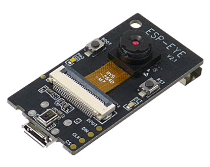

このドキュメントは何なのか
このドキュメントはプラレール企画についてのシステムだったり技術だったりの情報をまとめるために作りました。 ドキュメントを残すことで後輩への引き継ぎや初めて参加する人への説明をやりやすくしようという目的があります。 なのでみなさんドキュメントを書いていってくださいね。
プラレール企画とは
プラレール企画は2020年の調布祭から始まった、プラレールを制御してみようという企画です。 やっていることは毎年少しずつ違っていますが、主にはポイント制御、車両の速度制御などを行っています。
2023年のプラレール企画の予定
2022年のプラレール企画が諸事情で爆散したので、2023年は2022年でのプラレール自動制御などを引き続きやっていくことになると思います。
また、システム構成についても見直して作り直そうということになっています。
ソフトウェア
under construction...
ハードウェア
under construction...
2022年プラレール企画
2022年のリポジトリはこちら
2022年のシステム構成図
今年度のシステム構成図を以下に示します。
昨年度のプラレール企画のアーキテクチャを引き継いで今年度に新たにいくつかの機能を追加した形になります。今年度新しく追加した部分は次の通りです。

レイアウト
今年度のレイアウトを以下に示します。今年度は教室の関係で、昨年度よりも少し狭いレイアウトになりましたが、スペースを上手く活かして京王線を再現しました。


いくつか路線がありますが京王線がシステムによる遠隔制御路線で、そのほかの中央線や環状線はラジコンが走る専用路線を担っておりポイントやストップレールの制御は行なっていません。
桜上水に待避線を用意して通過待ちを可能にしたり、調布駅を立体交差化したりと工夫しています。新宿駅のホームがなんで2つなんだ！というツッコミもあるかと思いますが、そこはバーチャル京王線ということで...。
昨年度の反省(昨年は岩本町駅のように1つのホームに両方向の列車が来るようなパターンが存在していたためポイントの状態管理で組合せ爆発したり、列車が正面衝突する事故が多発しました...)を生かして、ソフトウェア設計が難しくならないように物理的に調整したレイアウトになっており、列車が必ず一方通行に流れるように工夫しています。
プラレールに関しては、鉄道研究会から貸していただきプラレールの車両に関してはラジコン車両は主に工研で用意しました。
状態管理
IoTシステムの基本的な機能である状態管理を担っているのが、externalとinternalの2つのサービスです。ここら辺のシステムは昨年度のものをそのまま引き継いでいます。
IoTシステムにおける状態管理について簡単に説明すると、システム上の状態と現実のハードウェアの状態を一致させるということです。例えば最近よくあるようなスマホから電気をON/OFFできるようなライトがあった時に、サーバー上ではライトの現在の状態(ライトがついているのか消えているのか)を保持しており、スマホからライトを消すという指示がくるとサーバー上の状態を更新するとともに、現実のライトもOFFにします。もし状態管理がうまくいっていないと、システム上だとライトが消えているのに現実のライトは点いているというような事態に陥ってしまうのでとても重要な部分です。
また、この状態管理によってシステムの状態とハードウェアの状態が一致していることが保証されていると、ソフトウェアではより抽象的にハードウェアを扱うことが可能になります。
さて、今回のシステムではexternalがポイントとストップレールの状態をKVS(Key Value Store)で保持しています。このexternalの状態が変化するとその変化がinternalを介してサーボを制御するESP32に伝わることで現実世界のポイントが動きます。例えば、sakurajosui_b1というストップレールをONにすると、
- ストップレールをONにするボタンが押される
- クライアントからexternalのAPIを叩く
- externalで状態(ON/OFF)を更新して、操作するポイントの名前と状態をinternalへ伝える
- externalから渡された状態に基づいて、そのポイントを管理するESP32に対してサーボの角度を指定するAPIを叩く
- ESP32で指定された角度にサーボが動き、ストップレールが動く
というような流れになっておりそれぞれで抽象化されているので、上から下へ流れるにつれてレイヤが下がっていくイメージです。
実装的な面で言うと、externalとinternalはそれぞれgolangで実装され、gRPCを用いて話すようになっており、フロントエンド側からはJSON形式のhttpでリクエストを受けつけるようになっています。ここら辺もconnectとかを使ってprotobufを使うように統一できると良さそうですね。
また、internalのサーバーはESP32と同じネットワーク上に存在しており、ESP32に固定IPを割り振ってそのIPアドレスをinternal側で管理することで実装しています。最近のIoTシステムだと、ESP32から直接クラウド上のサーバーにアクセスして状態の変更を監視するみたいなパターンが多いので少し特殊かもしれません...?
MongooseOSとmDashを使ってクラウドにするぞー！という計画はあったのですが、接続できる台数の制限があったり、1からこの部分のコードを書き直していると他の部分が追いつかないなどがあったので断念しました...。もし次回があればそこらへんも挑戦してみたいです。
自動運転
今年度の大きな新たな取り組みの1つが列車の自動運転です。
色々な方法があるので非常に悩んだ部分です。計画当初は、列車の位置をホールセンサを用いて把握して、その位置に基づいてポイントを切り替えるようなシステムを想定しており、ポイントと列車の状態の管理に悩んででいました。
そんな中、Maker Fair Tokyoに訪れた際に「東京大学プラレーラーズ」さんという団体がまさにプラレールの自動運転を行なっていたので色々とお話を伺っていたところ、コラボのお誘いを受け調布祭でのコラボが実現しました。

調整を行ったところ現在工研が開発しているシステムと組み合わせることが可能と言うことがわかり、プラレーラーズさんが実装した自動運転システムをauto operationとして組み込みました。
自動運転の仕組みについて
システムの詳細に関しては、プラレーラーズさんの資料やコードを参考にしていただきたいですが簡単に...。
自動運転システムでは、配線図に示しているchofu_b5のようなストップレールとホールセンサからなる閉塞区間によって列車の位置を管理しています。プラレーラーズさんによるシミュレーションの画面のような感じです。列車ごとにダイヤを設定しており、それの列車の位置に応じてポイントとストップレールの切り替えを行っているようです。

プラレーラーズさん側のシステムと工研のシステムでは扱っている情報や処理が異なるのですが、インターフェース部分や内部での値の取り扱いを工夫することによって連携を行っています。
ホールセンサは、プラレールの車両の底の部分に取り付けられたネオジウム磁石の磁気を検知するセンサです。このセンサを用いることによって、列車がセンサを通過したことを検知しています。検知したということを、jsonフォーマットのhttp経由でjson2grpcに送信してサーバーでgRPCに変換してauto operationに通知を行うようになっています。
管理サイト
昨年は完全オンライン開催だったため、観客側がポイントを遠隔で操作するために操作用のサイトを用意していました。しかし、今年度は対面開催かつ自動運転であるため基本的に来場者がポイントを操作することはありません。そのため、メンテナンスとモニタリング用にポイント・ストップレールの状態の確認と把握、カメラ映像の確認ができるサイトを構築しました。


管理画面の上部には、会場の各駅ごとに設置されたWebカメラの映像が投影されており一括して状態を確認することができます。画面下部では、現在のレールの状態が表示されています。
それぞれの信号がストップレールと対応しており、クリックするとストップレールのON/OFFが切り替わります。また、分岐になっているところをクリックするとポイントが切り替わります。
フロントエンド側とexternalのサーバー側とでWebSocketにて通信を行なっており、リアルタイムで状態の反映が行われるようになっています。
また、路線上で赤色にハイライトされている部分は閉塞区間が閉になっている部分で、その区間内に列車が存在することを示しています。
フロントエンドの実装は、Next.jsで行っています。昨年度のプラレール企画のものをベースとして今年度のレイアウトへの反映や調整を行いました。
画面下部の状態表示の部分はSVGを直接書き換えて実装しており、ReactでSVGをwrapするComponentを作成して下のように全てのパーツを座標指定して配置してあります。（手打ちで全部の座標を打ち込むのはなかなか辛かったのでツールで自動化したいです...）
<Rail
// hachioji_b2
positions={[
{ x: 120, y: 40 },
{ x: 300, y: 40 },
{ x: 300, y: 500 },
]}
trains={[]}
isClosed={blockState["hachioji_b2"]}
/>
カメラ配信
車載カメラ配信
ESP-EYE（図¥ref{fig:eye}）というマイコンボードを一部のラジコン化したプラレールの先頭に取り付けており、車両からの映像を見れるように実装を行いました。ESP-EYEは、小さいながら単体でWi-Fi接続できてWebカメラとして利用することができる便利なボードです。
今回はプログラムとしてesp32-cam-mjpegを利用したのですが、これはESP-CAM側でストリーミングサーバーを建ててそこにアクセスするとmjpeg形式で動画がストリーミングされるというものです。そのため、単体ではWebRTCに直接配信できないので、canvasに描画されたmjpegをcaptureしてstreamを生成して、そのstreamをSkyWayに配信する配信用のサイトを構築して配信を行いました。これにより、ESP-CAMに接続されるクライアントが1つに限定されることでESP-CAMへの負荷も軽減されています。

Webカメラ配信
会場内の各所に設置されたWebカメラから各駅の現状を配信するために、SkyWayを用いて配信サイトを構築しています。仕組み自体は単純で、会場内にWebカメラとノートパソコンを設置しておき、配信用のサイトから駅ごとに固定のRoomIdで入室してカメラ映像の配信を行っています。
インフラ
externalやinternalなどのサーバー群はすべてKubernetes基盤上にデプロイされます。Fluxcdを用いてGitOpsを実現しており、Githubにてmanifestsを管理しています。
また、Github Actionと組み合わせてCI/CDを行っておりdeploymentのbranchにmergeされるとイメージがビルドされます。イメージの更新を検知するプログラムが走っているため、自動的にデプロイが更新されるようになっています。
インフラの物理的な構成の概略を図に示します。
ここでは大きく、現地会場であるA402教室と多摩川DCに分かれています。現地会場では、デスクトップPCを配置しており、UbuntuのVM上でk3sを動かしています。多摩川DCは、20のごっちさんに提供していただいた自宅サーバー環境です。基本的にESP32と同一ネットワーク内に存在する必要があるinternalを除いて、externalやフロントエンド、auto operationなどは全て多摩川DCに配置されています。
A402側でinternalサーバーをホスティングするために、大学に申請してグローバルIPを提供していただき、教室に設置したRTX1210をルータとしてネットワークを構築しています。
大まかなインフラ構成自体は昨年のプラレール企画とあまり変わっていないので、詳しくは昨年度のプラレール企画の記事やごっちさんのブログを参考にしていただければ幸いです。